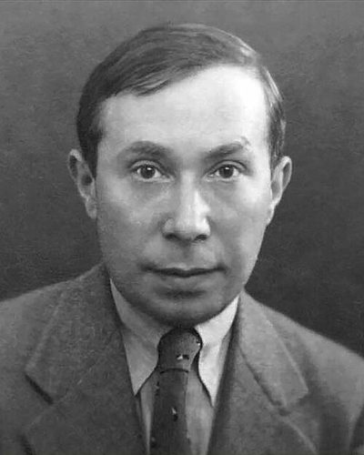

Ideologies / Conservative
What is Straussianism?
Straussianism is a political ideology in the Conservative family. Strauss argues that modern thought, by reducing every standard to a product of its time and by separating facts from values, has lost the ability to call anything just or unjust and ends in nihilism. He returns to the classical philosophers, for whom there is a right by nature that reason can discover. On that view the best regime is the rule of the wise, which in practice means a mixed regime of educated citizens under law. Modern natural right, beginning with Hobbes and Locke, lowered the aims of politics.
A return to classical natural right against relativism.
Defined from: Leo Strauss, Natural Right and History (1953)
See how close you are to Straussianism Dare a friend to answer as one


Where Straussianism stands on 13 axes
Each axis runs from 0 to 100. A score of 50 is the middle. On a classic compass it sits in the Authoritarian Right quadrant.
| Axis | Position | Score | In words |
|---|---|---|---|
| EconomyMarket to Planned | 35 | Leans Market | |
| OwnershipPrivate to Collective | 20 | Strongly Private | |
| RightsLiberty to Security | 50 | Balanced | |
| GovernmentDemocracy to Autocracy | 50 | Balanced | |
| StructureDecentralised to Centralised | 50 | Balanced | |
| NationInternationalist to Nationalist | 55 | Balanced | |
| ImmigrationMulticulturalist to Assimilationist | 60 | Leans Assimilationist | |
| ValuesProgressive to Traditional | 80 | Strongly Traditional | |
| TechnologyAccelerationist to Precautionary | 60 | Leans Precautionary | |
| EnvironmentIndustrialist to Environmentalist | 50 | Balanced | |
| ReligionSecular to Religious | 55 | Balanced | |
| MilitaryPacifist to Militarist | 55 | Balanced | |
| TradeFree Trade to Protectionist | 45 | Balanced |
Ideologies closest to Straussianism
- Aristotelian Polity90% alike
- One Nation Conservatism89% alike
- Burkean Conservatism87% alike
- Oakeshottian Conservatism86% alike
- Hegelian Constitutional Monarchism84% alike
Its opposite on this map is Fully Automated Luxury Communism, at 38%.
Parties near Straussianism
- Tory PartyUnited Kingdom. The Tamworth Manifesto (1834)87% alike
- Pakistan Tehreek e InsafPakistan. Shandaar Pakistan, Shandaar Mustaqbil (2024)85% alike
- Barisan NasionalMalaysia. PADU: Perancangan Amal dan Usaha (2022)85% alike
- Democratic Unionist PartyUnited Kingdom. Speaking Up for Northern Ireland (2024)84% alike
Common questions
What is Straussianism?
Straussianism is a political ideology in the Conservative family. Strauss argues that modern thought, by reducing every standard to a product of its time and by separating facts from values, has lost the ability to call anything just or unjust and ends in nihilism. He returns to the classical philosophers, for whom there is a right by nature that reason can discover. On that view the best regime is the rule of the wise, which in practice means a mixed regime of educated citizens under law. Modern natural right, beginning with Hobbes and Locke, lowered the aims of politics.
What does Straussianism believe?
In one line: A return to classical natural right against relativism. Its strongest positions are Private, Traditional, Market. Strauss argues that modern thought, by reducing every standard to a product of its time and by separating facts from values, has lost the ability to call anything just or unjust and ends in nihilism. He returns to the classical philosophers, for whom there is a right by nature that reason can discover. On that view the best regime is the rule of the wise, which in practice means a mixed regime of educated citizens under law. Modern natural right, beginning with Hobbes and Locke, lowered the aims of politics.
Who founded Straussianism?
Straussianism is defined here from Natural Right and History (1953) by Leo Strauss. The thinker most tied to it is Leo Strauss (1899 to 1973).
Is Straussianism left wing or right wing?
On a classic two axis compass Straussianism falls in the Authoritarian Right quadrant, which means the economic right and the middle between libertarian and authoritarian. Left and right hide a lot, though, which is why EthosScales scores it on thirteen separate axes.
How is Straussianism different from Aristotelian Polity?
They are close: 90% alike. The biggest gaps are on Structure, where Straussianism scores 50 and Aristotelian Polity scores 35, and Immigration, where Straussianism scores 60 and Aristotelian Polity scores 75. On each axis, 0 is one end and 100 is the other.
Think this is wrong? Suggest a correction. The scores are editorial estimates.